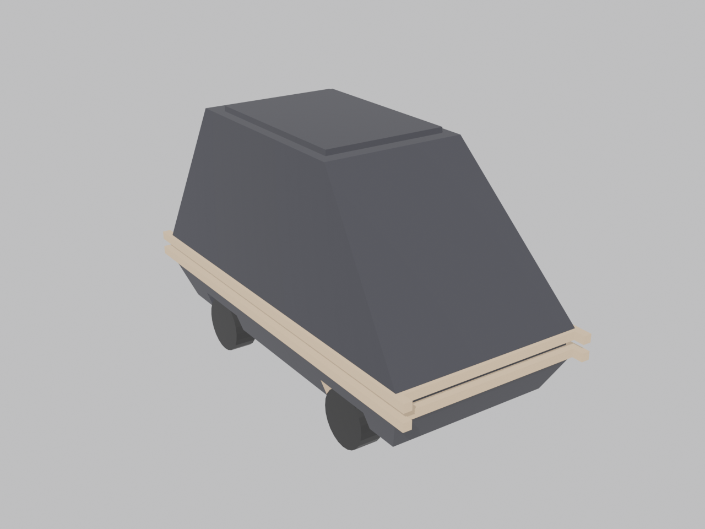
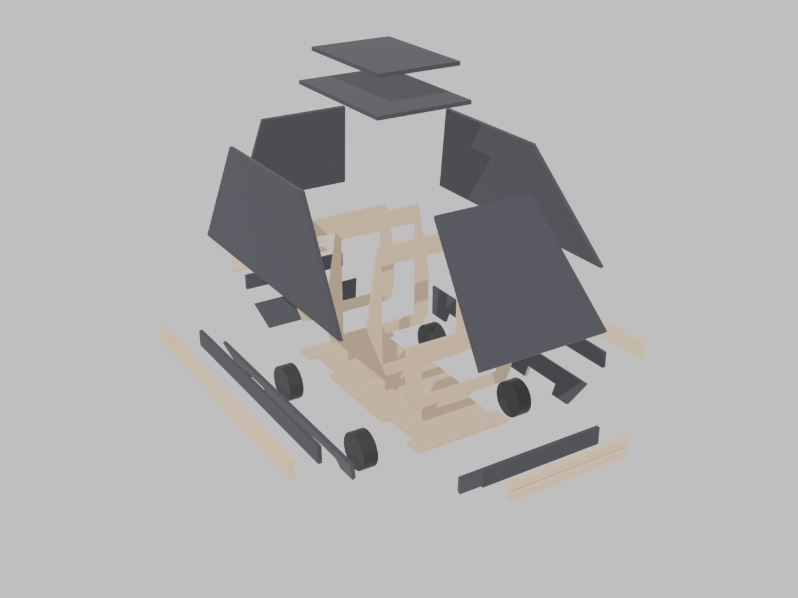
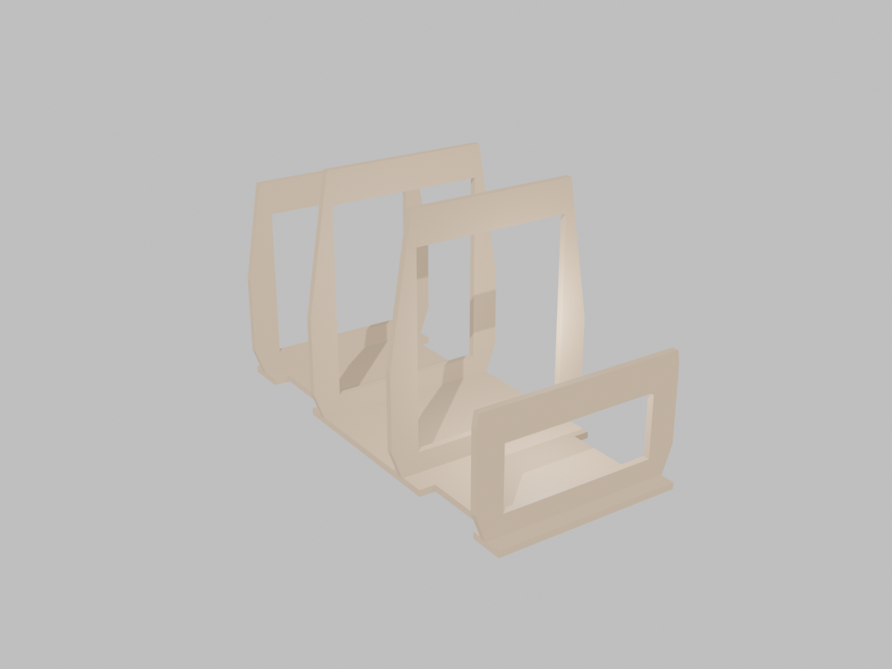
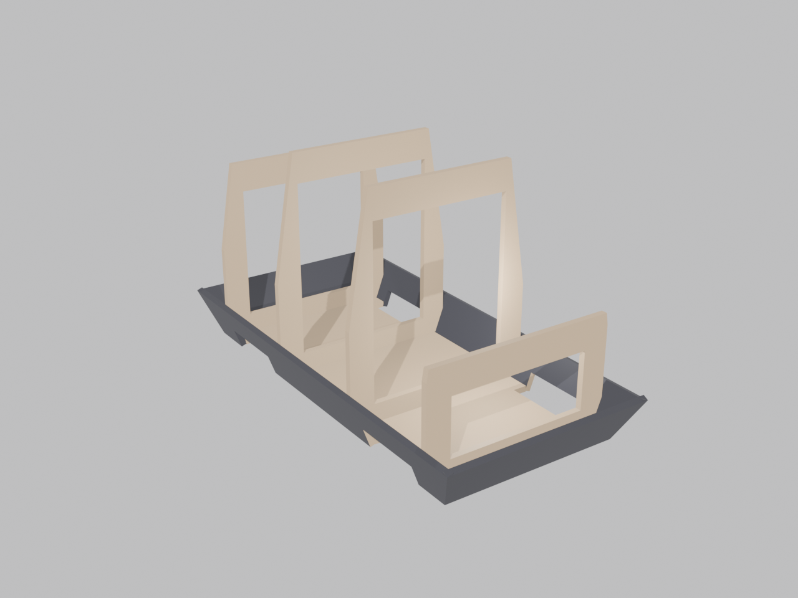
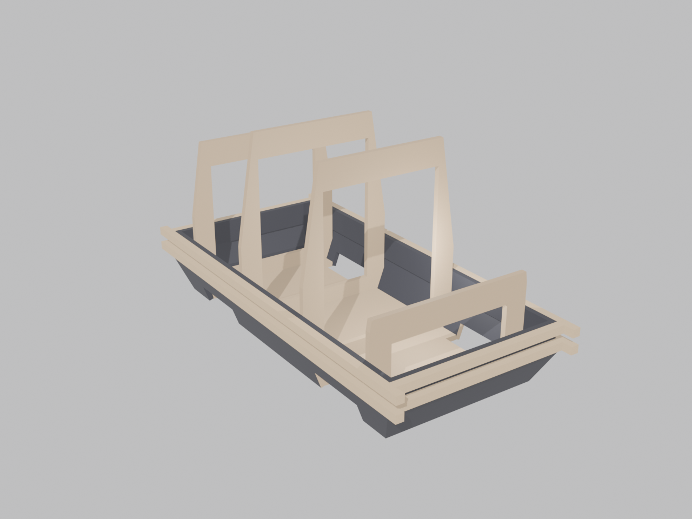
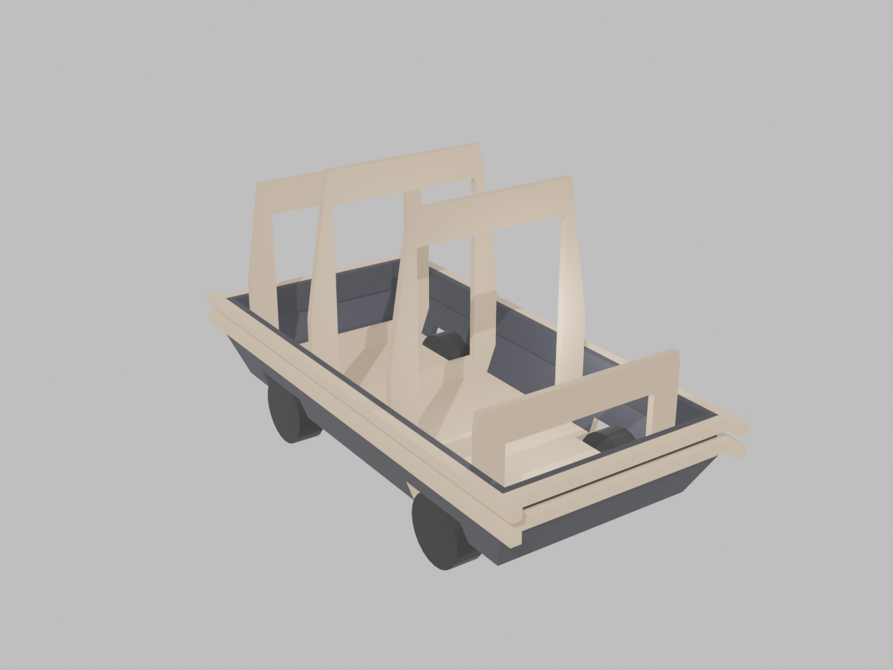
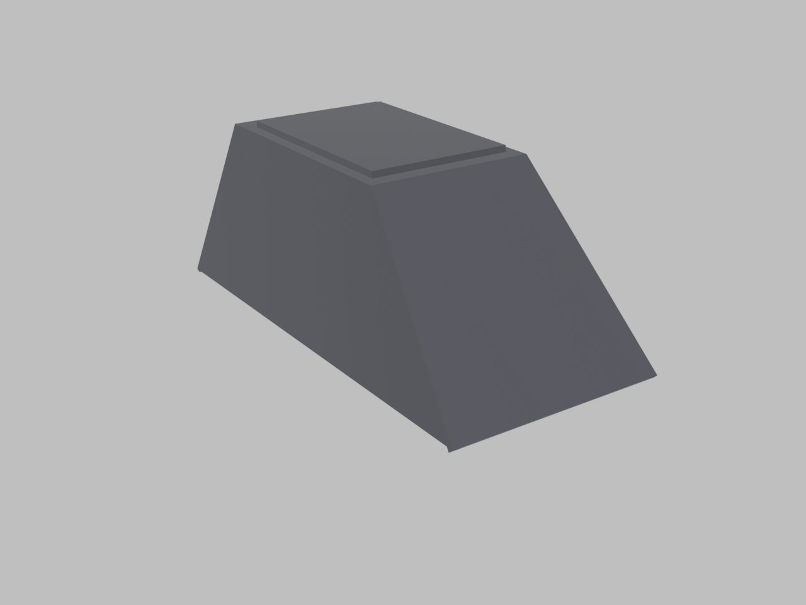

MSE-6 Mouse Droid — Plywood CNC Build
Overall: 19.1″ long × 9.0″ wide × 11.15″ tall · 1/4″ plywood skins on 4 internal ribs · functional RC, 4 exposed wheels · removable top shell.

Exploded view

Center: bottom plate + 4 ribs (the skeleton). Outward: skirt panels, then belt bands, then dowel rails. Above: the four shell facets, top panel, and greeble tray that together form the removable lid.
Parts
CNC-cut 1/4″ plywood — 19 pieces (see mouse-droid-panels.svg)
| Piece | Qty | Notes |
|---|
| Bottom plate | 1 | 15.4 × 6.9, edge notches at the 4 wheel stations |
| Rib 1–4 | 4 | Stations −7″, −2.5″, +2.5″, +7″ from center; lightening holes for wiring |
| Skirt sides | 2 | Mirror pair — cut 2 identical, flip one. Wheel notches in bottom edge |
| Skirt front / rear | 2 | Trapezoids, different heights (front clip vs rear clip) |
| Belt bands | 4 | Simple strips 1.125″ wide (sides 16.85″, ends 8.24″) — table saw OK |
| Shell sides | 2 | Mirror pair — cut 2 identical, flip one |
| Shell front / rear | 2 | Front is the long 47° nose slope, rear the steep 71° facet |
| Top panel + greeble tray | 2 | Tray laminates on top of the top panel |
Saw-cut 3/8″ square dowel — belt rails (8 pieces, four 36″ dowels)
| Piece | Qty | Length |
|---|
| Side rails (overshoot each end 0.68″ — the bumper stubs) | 4 | 19-1/8″ |
| Front / rear rails (fit between the side rails) | 4 | 8-1/4″ |
Hardware (builder’s choice)
4 wheels ∅2.5″ × 1″ with set-screw hubs · 2 geared motors + axle blocks (mount to plate underside; axle line 1-1/4″ above ground) · RC receiver + ESC + battery · 4 screws or magnets for the lid.
Assembly steps

Step 1 — Skeleton.
Glue/screw the 4 ribs to the bottom plate at their stations (−7″, −2.5″, +2.5″, +7″ from center; mark them on the plate first). Square and plumb each rib — every panel angle in the build comes from these. The recessed waist notch on each rib faces outward.

Step 2 — Skirt.
Glue the 4 skirt panels to the rib skirt-edges and to each other at the corners. The skirt hangs 0.3″ below the plate — let the ribs set the height. Wheel notches in the side panels go at the wheel stations. Corners are compound angles: hand-bevel or fill and sand.

Step 3 — Belt.
Glue the 4 ply belt bands onto the recessed rib waists, edges tight against the skirt’s top edge. Then glue the dowel rails onto the bands: bottom rail covers the band-to-skirt joint, top rail sits flush with the band’s top edge. Side rails run long — 0.68″ overshoot at each end. The top rail’s flat upper face is the ledge the lid will rest on.

Step 4 — Running gear & electronics.
With the top wide open: motors and axle blocks on the plate underside, wheels in through the skirt openings (hubs end up nearly flush with the skirt face — set-screw hubs let you service them from outside). Battery, ESC, receiver on the plate; wiring through the rib lightening holes. Test drive it now.

Step 5 — Build the lid as a unit.
Glue the 4 shell facets + top panel into one self-contained unit, then laminate the greeble tray on top. Dry-assemble it directly on the ribs (cling film over the ribs so squeeze-out can’t stick) so it cures at exactly the right angles. Add scrap glue blocks inside the hip corners for strength.
Step 6 — Fit the lid (keep it removable).
The lid self-locates: facets rest on the rib shell-edges, bottom edge sits on the top rail ledge all the way around. Secure with 4 small screws through the shell sides into the ribs, or glue cleats inside and use magnets for tool-free access. Don’t glue it down — the top is your only service access. Paint everything satin black.
Shaper Origin notes: the SVG uses white-fill/black-stroke for exterior cuts and black fill for interior cuts; gray text labels are reference only. Angled facet panels are drawn at their true unfolded size — cut as drawn. Where two angled panels meet (shell hips, skirt corners) expect a slight edge interference: bevel the mating edges or fill the gap; the belt rails hide the waist joints.